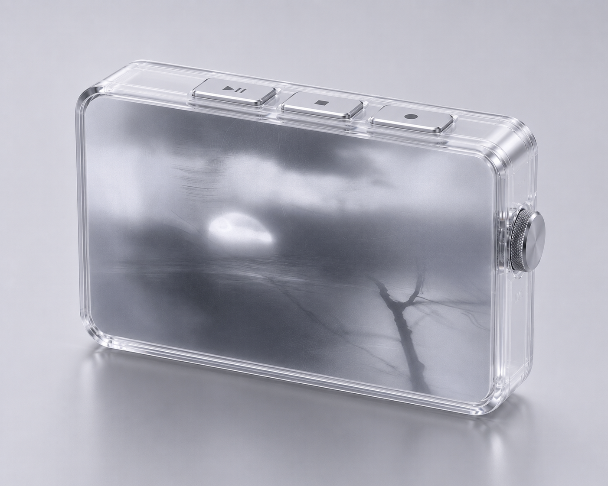
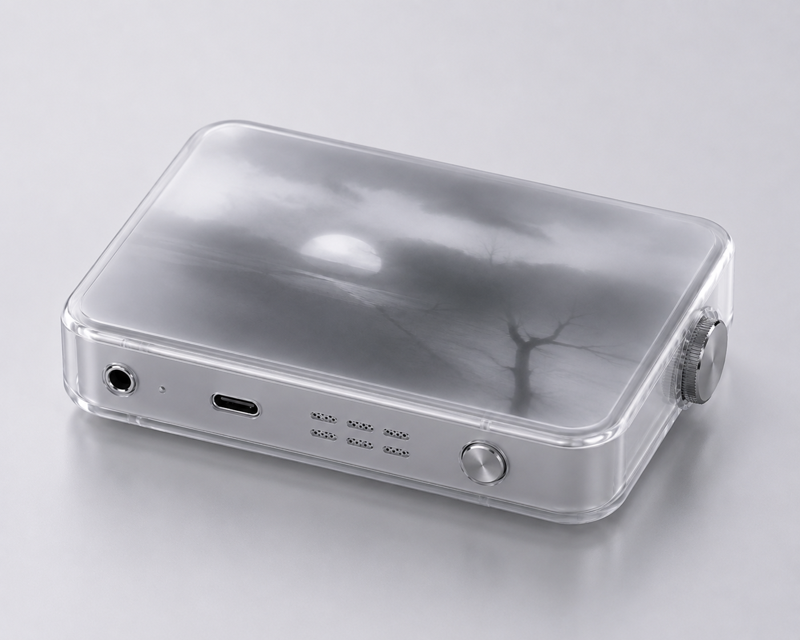
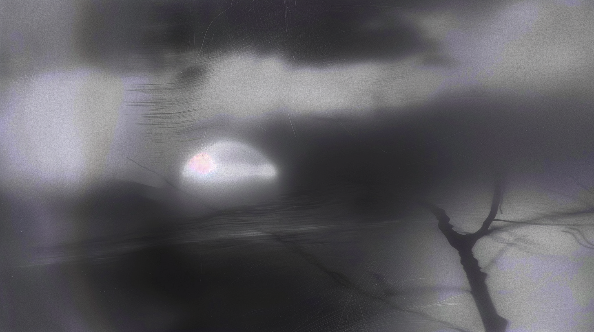
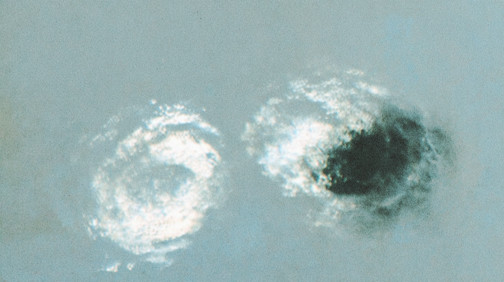

Aftertone is an ongoing speculative project that explores how spoken reflections can become abstract visual films, sound experiences, and possible emotional vocabularies.
Concept / Product Scenario / Emotional Interface / Visual System
Speculative Device / AI-generated Visuals / Sound Experience / Emotional Archive
In Progress / Concept Development / Prototype Planning
Many mood trackers ask users to choose a feeling they already understand. Aftertone begins from a different state: moments when a feeling is present, but still unclear, layered, or difficult to name.
The project imagines a small emotional recording device. Instead of diagnosing the user, it listens to a spoken memory and translates its atmosphere into sensory reflections.
The user speaks about a situation that stayed in their mind. The system interprets emotional cues such as repetition, distance, tension, contradiction, fatigue, or relief. These cues are not returned as a score, but translated into a short mood film and a sound-based listening experience.
If the user wants, Aftertone can reveal possible emotional vocabulary. The words are offered as suggestions rather than answers, allowing the user to decide what feels close to their experience.
How might we help people recognize emotions they cannot yet name by translating spoken memories into visual and sonic atmospheres?
The project is currently being developed as a compact object inspired by portable tape players and early MP3 players. It combines analog controls with a seamless display, where abstract emotional films appear only when the device is active.

As an early study, three emotional states are being translated into abstract image and video languages. These examples are not literal illustrations of events, but visual atmospheres for feelings that are difficult to name.


Aftertone does not diagnose emotions. It offers sensory reflections and possible emotional vocabularies to help users recognize what they might be feeling.